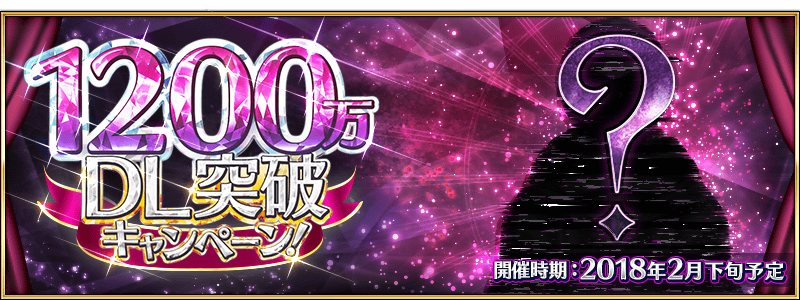

感謝您使用「Fate/Grand Order」。
2018年2月24日(六)在廣島線・廣島市舉辦的「FGO冬祭 2017-2018 ～冬之法老大感謝祭～」(廣島會場)發表了「Fate/Grand Order」及「Fate/Grand Order Arcade」相關的新情報。
以下介紹一部份新情報。
◆「1200萬DL突破宣傳活動」舉辦決定！◆

為了記念「Fate/Grand Order」的1200萬下載量突破，在2月下旬(預定)舉辦「1200萬DL突破宣傳活動」。
■舉辦時期
2018年2月下旬預定
詳情請在此處的公告確認。
◆「FGO冬祭 2017-2018 ～冬之法老大感謝祭～」(廣島會場)的舉辦記念贈送聖晶石10個！◆
為了記念「FGO冬祭 2017-2018 ～冬之法老大感謝祭～」(廣島會場)的舉辦，向2018年2月25日(日) AM2:59前通過「特異點F 炎上汙染都市 冬木」通過的Master贈送聖晶石10個。
|
■對象期間 |  |
其他線下活動及週邊請參考原公告。
今後也請多多指教「Fate/Grand Order」。